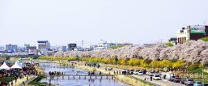
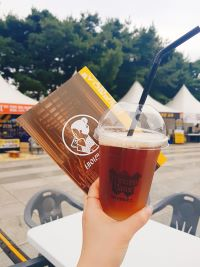
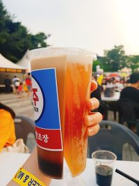
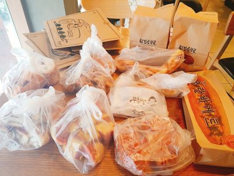

Seoul is the capital city of South Korea. There are a lot of tourist attractions and famous restaurants.
The Han River, which is the biggest river in Korea, is one of the prettiest places.
At night, the bridge is lighted and the fountains are also really pretty.
My university was in Cheongju, which is located in Chung-cheong bukdo.
Musimcheon, which is a lake in Cheonju, is famous for its beautiful view and pathways for people to walk.
This picture was taken in spring. The cherry blossoms make the view even better.
Some of my relatives live in Daejeon, so I have been there several times.
This summer, I went there with my mom because there was a beer festival.
We had a chance to taste popular beer from different regions which was a great experience.
Some booths had cups that could hold up to two kinds of beer.
I really recommend going to one of the beer festivals if you go to Korea!
 Also, there is a famous bakery called Sungsimdang.
There are a wide variety of goods there, so if you like bread, you must go to this place if you go to Daejeon!
